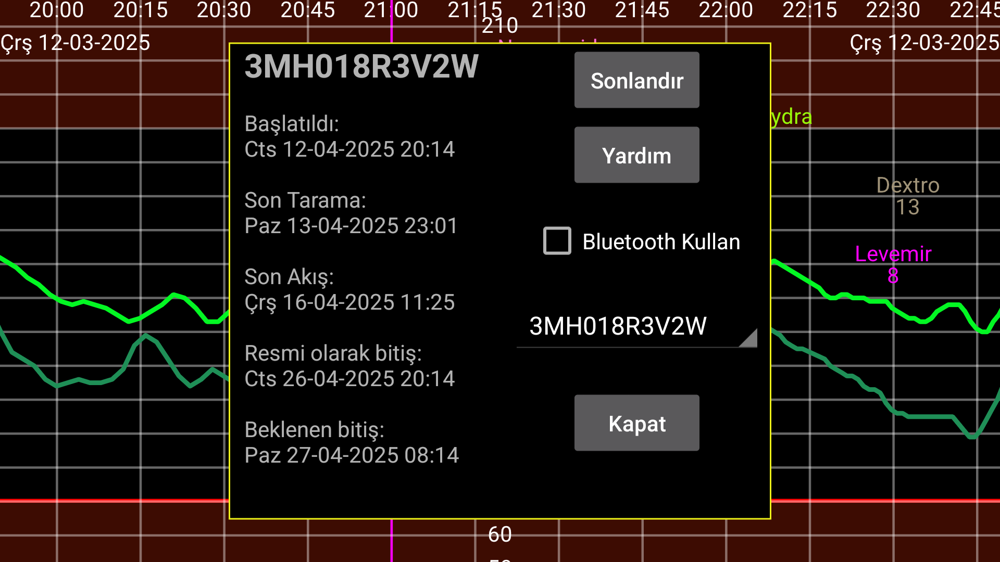

Juggluco akış değerlerinin klonu olarak işlev gördüğünde sensörler hakkında bilgi verir.
Başladı: Sensörün başlatıldığı zaman. Libre sensörlerinde bu ilk glikoz değerlerinden bir saat öncedir.
Son Tarama: Sensörün tarandığı son zaman. Ayrıca sensör hatası veya sensör değiştirme hatası nedeniyle veri alınmadan sensör tarandığında bu taranmış olarak sayılır.
Son Akış: Bluetooth aracılığıyla alınan son glikoz ölçüm zamanı.
Resmi Sona Erme: Sensör üreticisinin söylediği sensör bitiş tarihi.
Beklenen Sona Erme: Bazı sensörler gerçekte resmi bitiş tarihinden daha uzun süre dayanır. Libre 1 ve 2 ve Dexcom G7/ONE+ 12 saat daha uzun süre dayanır. Sibionics sensörleri neredeyse 10 gün daha uzun süre dayanır. Sadece Libre 3 sensörleri resmi bitiş saatinden daha uzun süre dayanmaz.
Sonlandırma: Sensörden Bluetooth aracılığıyla glikoz değerleri almayı durdurun. Tekrar kullanmak istediğinizde, sensörü tekrar taramanız gerekir.
Bluetooth kullanın: Cihazı doğrudan Bluetooth üzerinden sensörle bağlayın. Bunu, hangi cihazın sensörle doğrudan bağlantı kuracağını değiştirmek için kullanabilirsiniz. Daha önce sensörle doğrudan bağlantı kuran diğer cihazda kapalı olmalıdır. Ayrıca, Akış değerlerinin ters yönde gönderilmesi için her iki cihazda da klon ayarlarını değiştirmeniz gerekir. Diğer taraf bir WearOS saati olduğunda, bunu tek bir düğmeyle yapabilirsiniz: Sol menü→Watch→WearOS Yapılandır→”Doğrudan sensör-saat bağlantısı”
Farklı sensörler kullanırken, hangi sensör için bilgi görüntüleneceğini seçebilirsiniz.